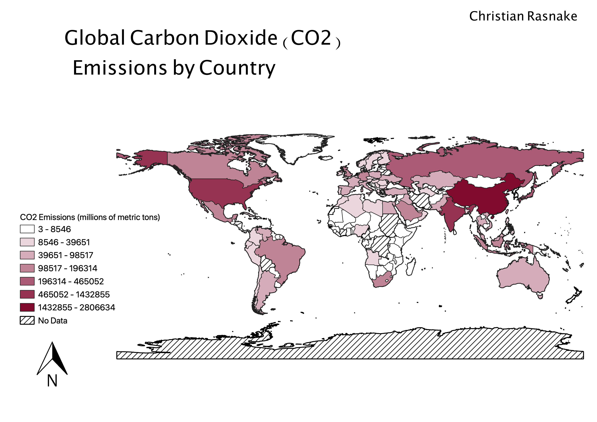

Homework 9: 2014 World Carbon Dioxide Emissions Choropleth Map
Christian Rasnake
For my choropleth map based on a non-census topic, I decided to map the level of carbon dioxide emissions globally in 2014. The reason I selected this topic is because I am an environmental studies major, and have been focusing on carbon dioxide emissions and their impacts due to climate change. This has always been a topic of interest for me, and mapping this metric globally allows for interesting patterns to emerge across the data.

Based on the above map, you can see different patterns illustrated. First, it is clear that the countries who are doing the most polluting are the more developed first-world countries. The United States and China are the most stand-out polluters in the world. There were some countries where there was no data available regarding carbon emissions, likely because they do not have the means to report this type of information in developing countries. It might be interesting to normalize this data across the countries by creating a ratio between carbon dioxide emissions and population, to see what country pollutes the most on a per capita basis.
Data used for this project
Cleaned CSV dataset
Source of CSV
Link to shapefile